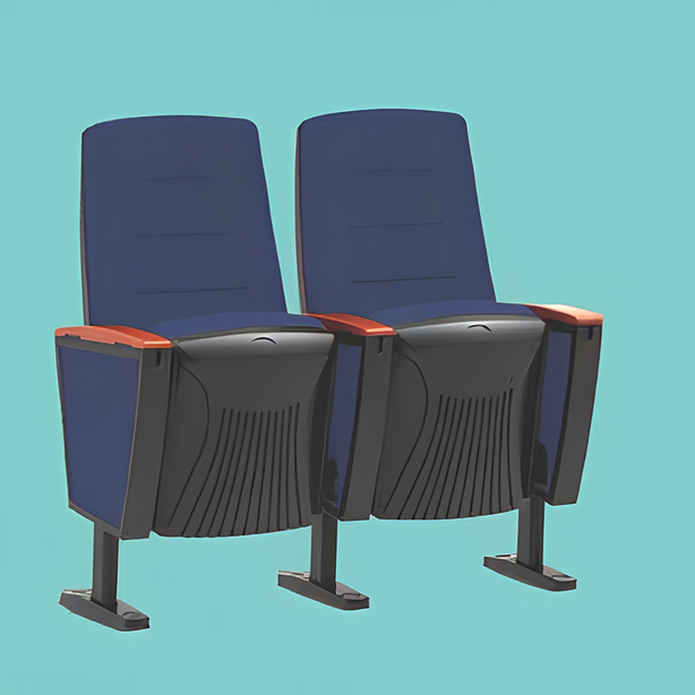
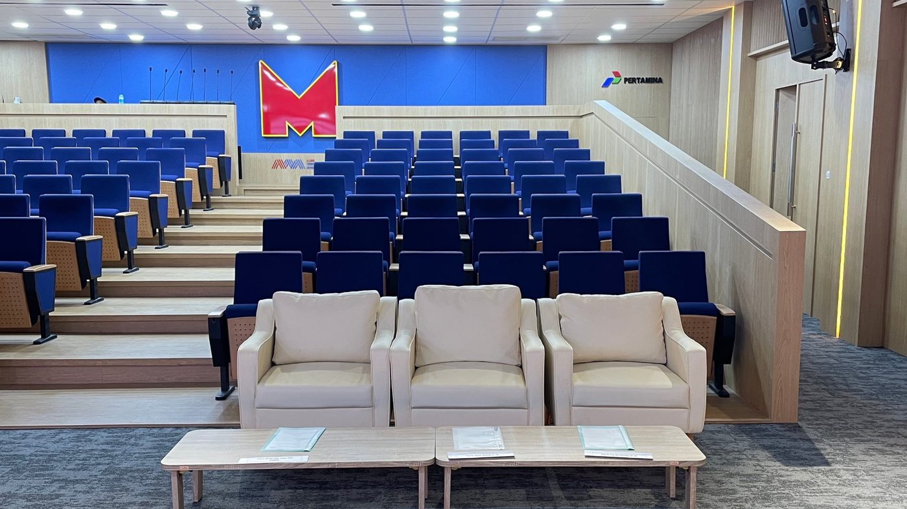
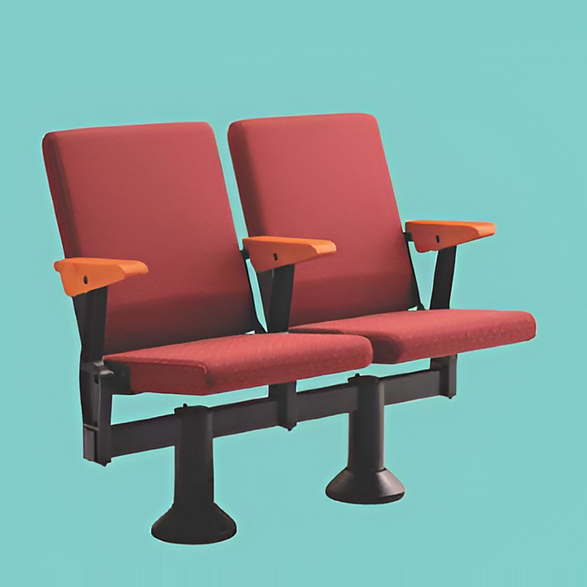
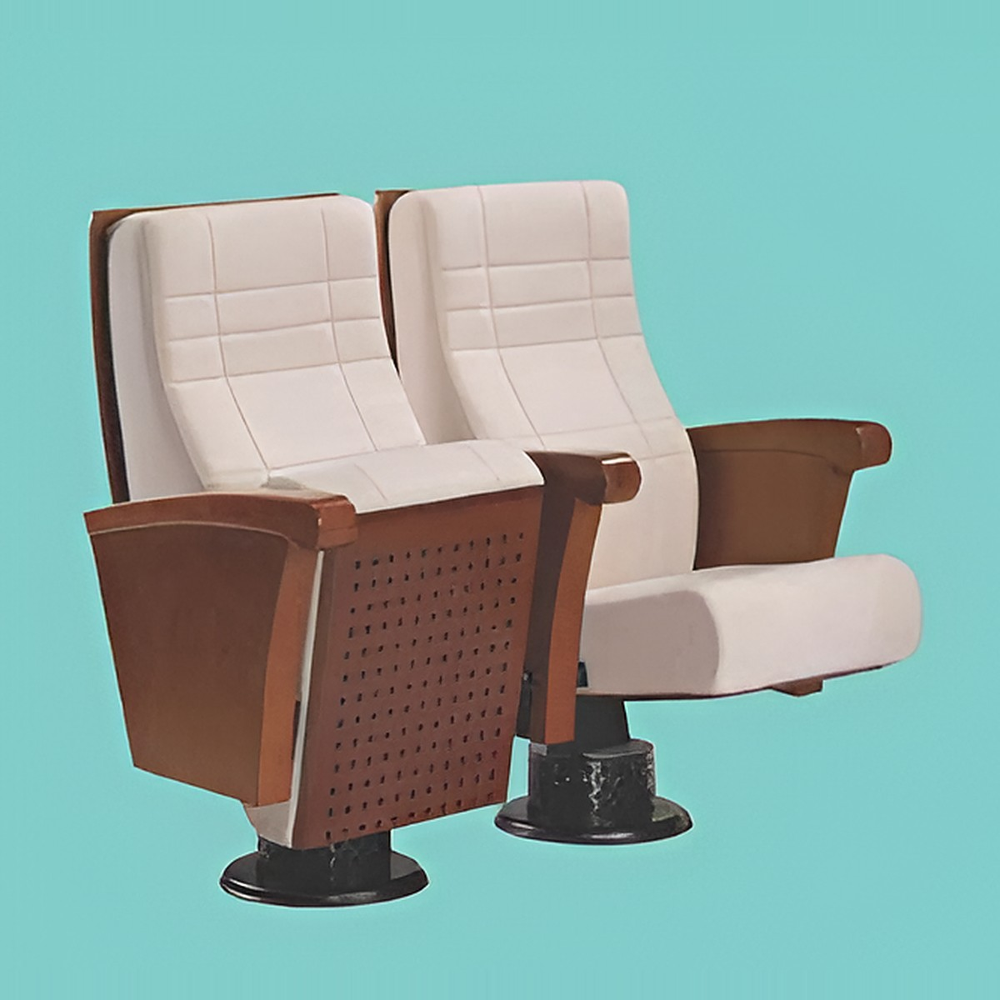
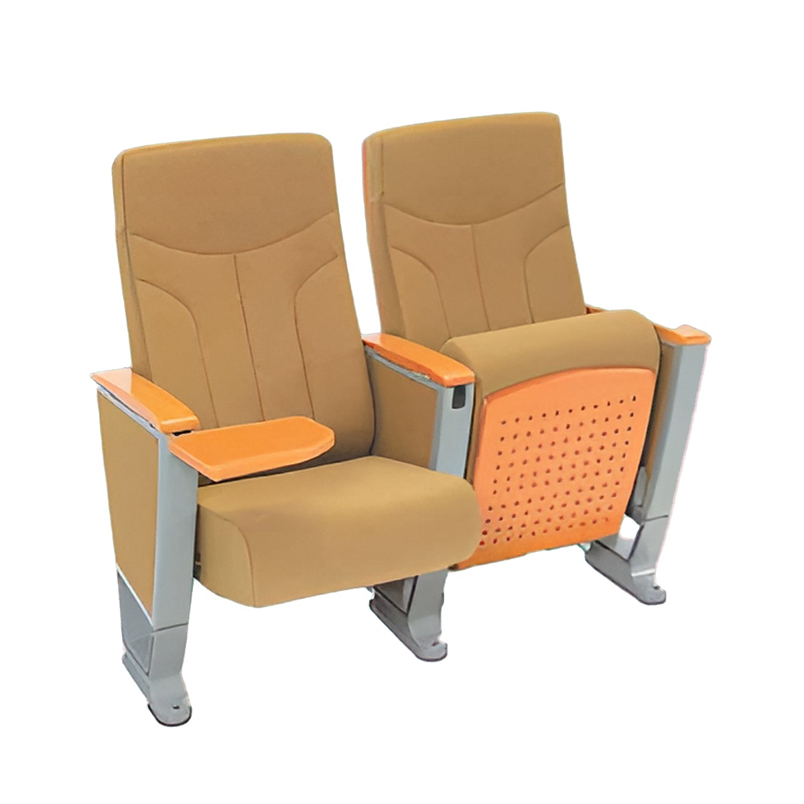
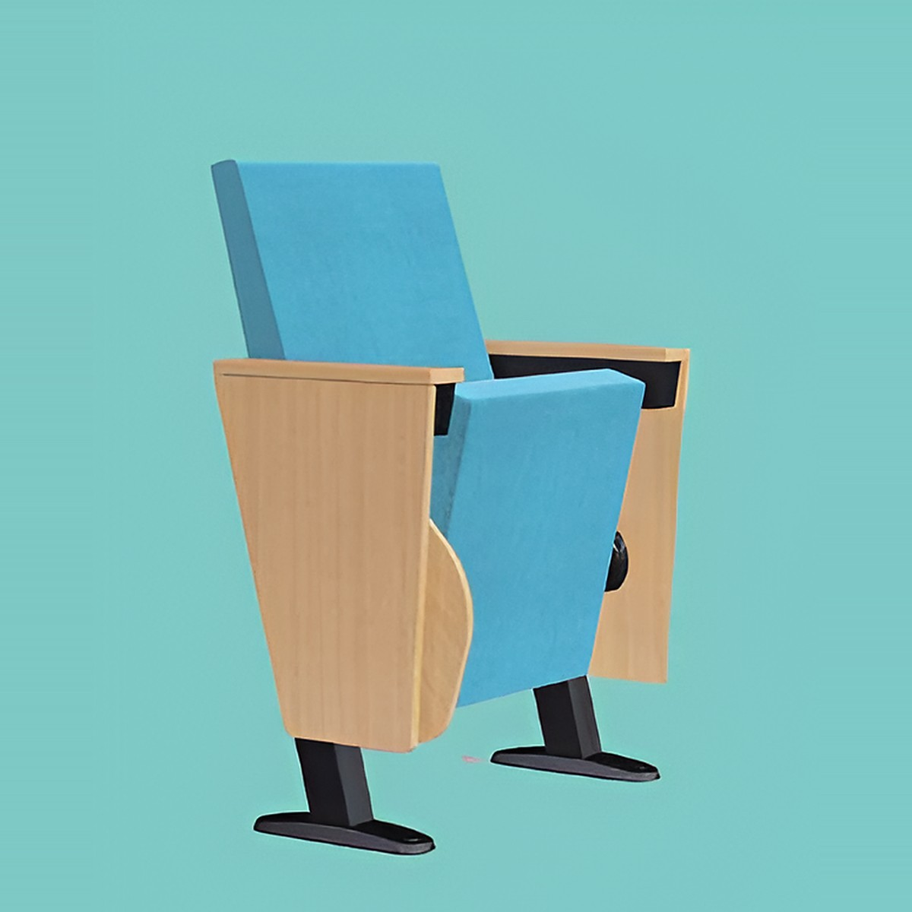
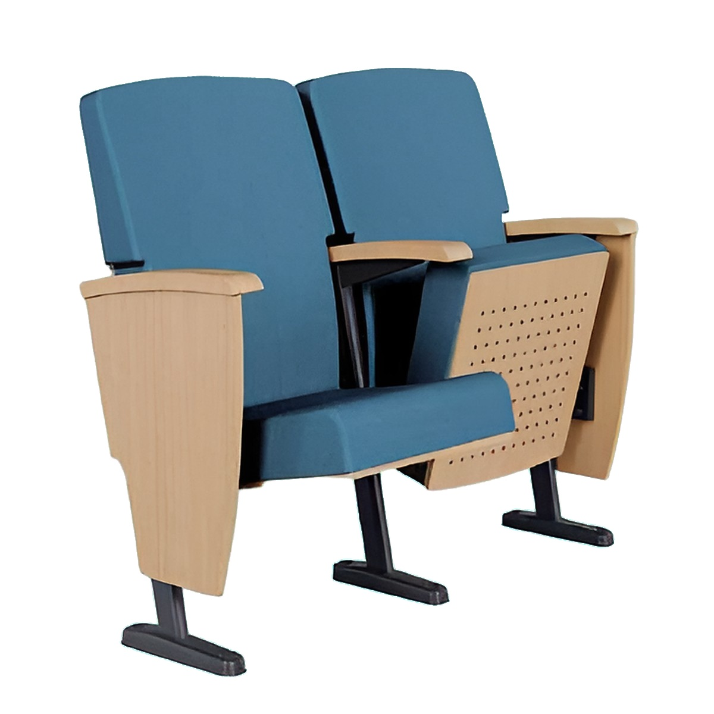
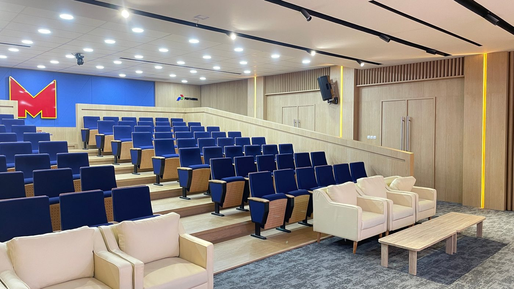

KURSI AUDITORIUM ZECO

Pilihan 13 model kursi auditorium Zeco untuk aula, kampus, ruang seminar, dan gedung pertemuan. Kirim ukuran ruangan Anda, kami bantu menentukan model dan jumlah yang sesuai.
Ratusan kursi akan dipakai lama oleh banyak orang. Ukuran, tata letak, dan bahan yang tepat menentukan kenyamanan sekaligus daya tahannya.
Beberapa model pilihan. Lihat seluruh 13 model di halaman produk.






Dudukan, sandaran, dan sudut duduk menentukan kenyamanan pada acara berdurasi panjang.
Jarak antar baris dan lebar kursi menentukan kapasitas sekaligus kemudahan keluar-masuk.
Susunan baris dan posisi kursi sebaiknya menjaga sudut pandang ke panggung dan layar.
Bahan pelapis kursi ikut memengaruhi penyerapan suara dan kualitas akustik ruangan.
Rangka dan pelapis yang kuat mengurangi biaya perawatan untuk pemakaian rutin.
Banyak pilihan model memudahkan menyesuaikan kebutuhan ruangan dengan anggaran proyek Anda.

AuditoriumSusunan kursi berundak menghadap panggung dan layar, dengan lorong tengah yang lega untuk akses keluar-masuk.
Tata letak baris yang rapi untuk acara besar, memaksimalkan kapasitas tanpa mengorbankan kenyamanan duduk.
Kursi dengan meja tulis lipat untuk peserta yang perlu mencatat selama sesi panjang.
Langkah menentukan jumlah kursi dari ukuran ruangan, lebar kursi, dan lorong agar tetap nyaman dan aman.
Baca selengkapnyaMembandingkan kursi tetap dan kursi lipat berdasarkan fungsi ruangan, kapasitas, dan kemudahan perawatan.
Baca selengkapnyaHal-hal yang perlu dipertimbangkan sebelum memutuskan model, bahan pelapis, dan merek kursi auditorium.
Baca selengkapnyaKami menyediakan kursi auditorium merek Zeco. Daftar 13 model ada di halaman Produk, dan ketersediaan dapat Anda tanyakan melalui WhatsApp.
Kirim ukuran ruangan atau denah, perkiraan jumlah kursi, dan jenis acara melalui WhatsApp. Kami akan memberikan rekomendasi model dan penawaran harga.
Bisa. Kirimkan denah atau ukuran ruangan Anda, lalu kami bantu menghitung perkiraan jumlah kursi dan susunan barisnya.
Jumlah kursi bergantung pada luas ruangan, lebar kursi, jarak antar baris, dan lebar lorong. Kami membantu perhitungannya agar kapasitas dan kenyamanan seimbang.
Ya, silakan hubungi kami untuk kebutuhan proyek dengan jumlah kursi banyak agar kami siapkan penawaran yang sesuai.
Silakan tanyakan ketersediaan pengiriman dan pemasangan sesuai lokasi Anda melalui WhatsApp.
Ceritakan ukuran ruangan dan kebutuhan acara Anda. Kami bantu memilihkan model kursi auditorium Zeco yang sesuai dengan kebutuhan dan anggaran Anda.